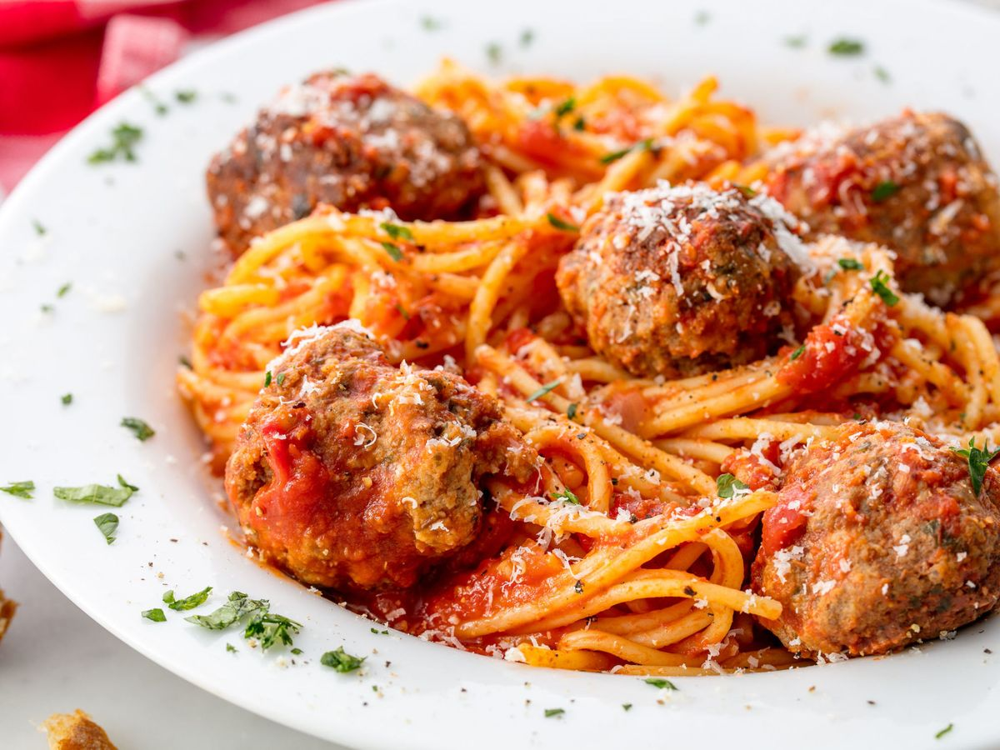

Thomas A. Edison CTE HS
Web Development
Making A Recipe
Vashti Dalchand
10/16/23
How To Make The Best Spaghetti And Meatballs!
Do your Spaghetti And Meatballs taste horrible? Well here's my recipe on how to make the best one yet!
Here's a picture of my Spaghetti And Meatballs that I made a couple days ago

Ingredients
- 1 lb. spaghetti
- 1 lb. ground beef
- 1/3 c. bread crumbs
- 1/4 c. finely chopped parsley
- 1/4 c. freshly grated Parmesan, plus more for serving
- 1 large eggs
- 2 garlic cloves, with minced Kosher salt
- 1/2 tsp. red pepper flakes
- 2 tbsp. extra-virgin olive oil
- 1/2 c. onion, finely chopped
- Virgin olive oil
- can crushed tomatos
- bay leaf
- freshly ground black pepper
Direction
- In a large pot of salted boiling water, cook pasta until al dente. Drain.
- In a large bowl, combine beef with bread crumbs, parsley, Parmesan, egg, garlic, 1 teaspoon salt, and red pepper flakes. Mix until just combined then form into 16 balls.
- In a large pot over medium heat, heat oil. Add meatballs and cook, turning occasionally, until browned on all sides, about 10 minutes. Transfer meatballs to a plate.
- Add onion to pot and cook until soft, 5 minutes. Add crushed tomatoes and bay leaf. Season with salt and pepper and bring to a simmer. Return meatballs to pot and cover. Simmer until sauce has thickened, 8 to 10 minutes.
- Serve pasta with a healthy scoop of meatballs and sauce. Top with Parmesan before serving.
- After you did all this , enjoy your spaghetti and meatballs with a side of garlic knots or garlic bread!